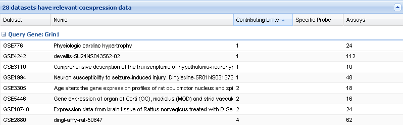
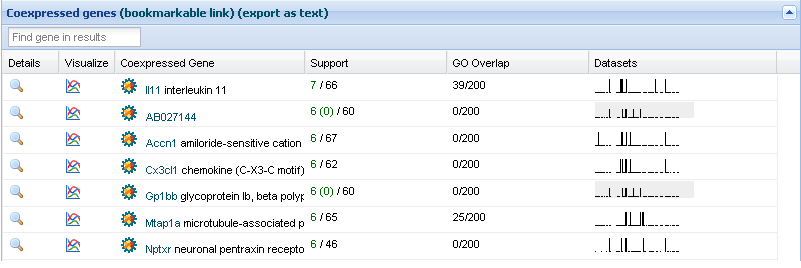

Overview
Gemma stores millions of coexpression "links", which are pairs of genes found to be significantly correlated in an
expression study. For any given expression experiment, only the strongest correlations are stored, but the number of
"links" each data set contributes to the database varies enormously. The coexpression search function of Gemma allows you
to identify coexpression patterns that are not only strong in a single data set, but which show up in multiple data sets
collected by multiple laboratories. Links that are reproduced in multiple labs are much less likely to be false positives.
The number of data sets a link appears in is the
support for that link.
To search the coexpression database, you choose one or more genes to start with, and the range of data sets you wish to
query. Gemma returns the most reproducibly coexpressed genes.
Step by step

Step 1: Choose Gene(s)
To select genes for your search:
-
Select the desired taxon (optional; this makes the searches a little easier to work with)
-
Type symbol or name of the query gene. Gemma will search for the term and show the results in a dropdown list. Select the
gene from the dropdown.
-
Click '+' to add the gene to your working list; if you only want to search one gene, this is not necessary. To remove
previously selected genes from your working list, click '-'.
-
Repeat steps 2 and 3 to add/remove additional query genes.
Alternative method: By clicking on the 'download' button (next to the '-' button), you can enter a list of gene symbols. Gemma will search for them automatically
and populate the gene list with the results.
Step 2: Set Stringency
Genes that are co-expressed with the query gene(s) must be co-expressed in at least this number of datasets if they are to
be displayed in the results. That is, the stringency is the minimum support.
Step 3: Choose search type
Decide whether you need to check "My genes only". If checked, Gemma will only display results for
coexpression among the query genes. This will obviously only work if you select more than one query gene.
That is, the result genes must also be query genes. If left unchecked, you will get coexpression results for each
query gene considered independently. That is, leaving the box unchecked is like running multiple single-gene
queries in succession, except you get the results all at once.
Step 4: Select Scope
Scope refers to the data sets (also known as expression experiments or studies) that will be included in the search. Gemma
allows users to choose predefined scopes or to create their own.
-
Use the dropdown menu to pick a preset. If you had added your own 'sets', they will be shown in the menu.
-
Click the 'edit' button to bring up a new interface (the 'dataset chooser') for viewing, modifying and creating dataset
sets. See the
Gemma wiki for details about the
dataset chooser.

Step 5: Submit
Click
Find coexpressed genes to submit the co-expression search. You will see text that reads
Loading .... Queries will typically take several seconds.
Step 6: Interpret Results
The results of the co-expression search will yield 3 tables, a
Search Summary table, a (minimized)
Datasets table with relevant co-expression data, and a
Coexpressed genes table:
Search Summary
This table summarizes the datasets used and the links for each query gene:

-
Data sets available - The upper bound of datasets that could have participated in the co-expression search, based on the
"scope" you chose.
-
Data sets in which the query gene was testable - This is the initial upper bound for the "support" values that can be
found for links with the query gene: confirmation cannot come from more data sets than the query gene was testable in. The
query gene is 'testable' and a data set if 1) It is represented on the platform(s) used in the study and 2) The data
passed the Gemma preprocessing filters, which attempt to remove unreliable data.
-
Links found - Total number of links found for this query gene. For 'preset' searches, this number will always equal the
sum of the following two numbers. For custom searches, the number of links found includes those which did not meet your
stringency criteria.
-
Links that Met stringency (+) - Number of positive correlation links that met your stringency threshold.
-
Links that Met stringency (-) - Number of negative correlation links that met your stringency threshold.
'X datasets have relevant coexpression data'
This table is initially minimized to save screen space. It holds information about the data sets which yielded results. To
display the contents, click on the downward arrow at the far right of the table. The table has 7 columns and is grouped by
query gene.

-
Dataset - The short name of the dataset participating in the co-expression search.
-
Name - The longer name of the dataset participating in the co-expression search.
-
Contributing Links - The number of links in the dataset contributing co-expression support.
-
Specific Probe - True if the dataset contains a probe that uniquely tests for the query gene. Otherwise, the data set only
has probes that Gemma considers as possibly detecting multiple genes.
-
Assays - The number of assays (samples) in the dataset.
Coexpressed genes
The co-expressed gene table columns show the information detailed below.

-
Details - Probe level details for the gene, including supporting datasets and differential expression results for each probe
assaying to the gene.
-
Visualize - Visualize the expression profile of the query gene with the coexpressed gene. Expression profiles providing
strong evidence for coexpression are shown in red and black. Profiles for other probes for the same genes are
"greyed out".

-
Coexpressed Gene - The gene that is co-expressed with the query gene. Each gene has a icon which can be used to make it
the query gene. The symbol for the gene is a link to the Gemma details page for the gene.
-
Support - The number before the slash is the number of distinct datasets the gene pair is co-expressed in. If the value is
red, the gene pair have a negative correlation. If the value is in
green, the gene pair has a positive correlation. The number after the slash is the
number of distinct datasets in which the pair was tested. Note that this value varies for each pair, because not all data
sets provide data about every gene. If you ran a custom search, you may see support numbers like
6 (4). The number in parentheses is the
adjusted support, after a conservative adjustment to remove the influence of potentially cross-hybridizing probes
is made.
-
GO Overlap - The Gene Ontology term overlap for a pair of co-expressed genes is a measure of similarity of the genes,
based on prior knowledge. The number before the slash is the number of common GO terms between the query and coexpressed
gene. The denominator is the number of unique GO terms (including parents) of the coexpressed gene.
-
Datasets - The images shown (blown-up example below) are a visual representation of all the data sets supporting the
coexpression results. A short black line indicates the experiment was tested but does not support the co-expression (blue
arrow below), a spike indicates the experiment was tested and supports the co-expression (green arrow below), and a gap
indicates the experimentwas not tested (red arrows in image). The ordering of experiments is the same across all genes,
so you can look along vertical tracks to see which experiments contribute to many of the links. Thus, the number of
spikes equals the support; the number of non-gaps is the number of tested data sets; the the total width indicates all
the data sets which were tested.

Downloading or saving results
The results table also includes a permanent link to the search, and a link to download a textual version of the results.